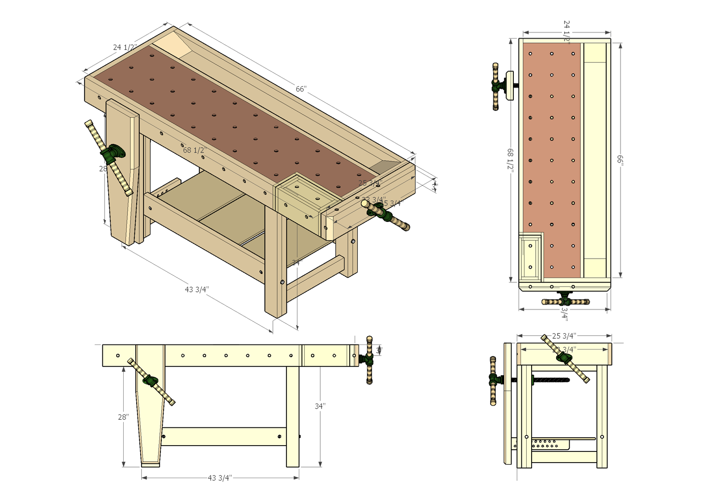

Traditional Wood Craft
Workbench
- British/Scandinavian style
- Bench Screws for vises (shoulder vise too)
Figure 1:

Projects
- For around the house:
- Cellar doors
- Picture frames
- Shaving brushes
- Nutcracker (threaded)
- Carpenter bee traps
- Teabox
- Bird boxes (done)
- Boot jack (done)
- Coat tree (done)
- For the kitchen:
- Spatualas and spoons
- Rolling pin
- Tortilla press
- Cider press
- Cutting board
- with detachable bread slicer combs?
- Knife block
- Mortar w/ pestle
- Picnic basket
- Pasta Tines
- Mandolin
- For the barn:
- Chicken coop
- Carrying tote
- Yoke
- Shepherds Crook
- For fiber projects:
- For outdoors:
Yurt Setup.
- Adirondack Chairs
- Marcy field cot
- Buckets
- Rosin bird whistle
- Canoe paddles
- Fishing poles
- Recurve bows
- Arrows
- Pack baskets
Misc:
Mission Furniture Ideas
- Standing desk (done)
- Bed (done)
- Trestle table
- Coat tree
- Night stand/TV tray
- Adirondack chair
Hand-made tools
- Scrub plane
- Shooting board
- Router plane
- Frame saw
- Shaving Horse
- Gauge
- Toolbox
- Spoke shave
- Knife
- Timber dogs
- Adze
- Mallet (done)
- Oiler can
- Card scrapers
References
Made with DocOnce